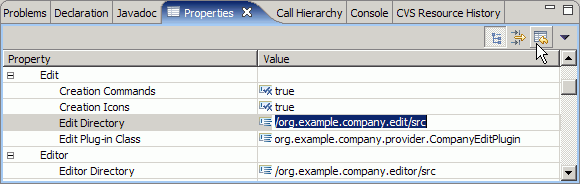
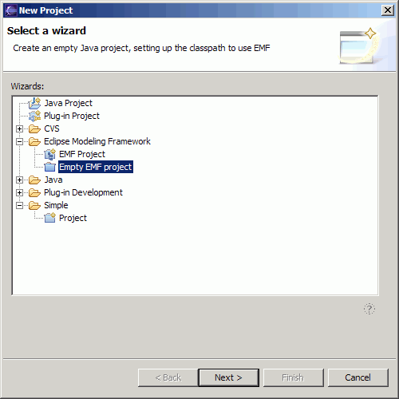
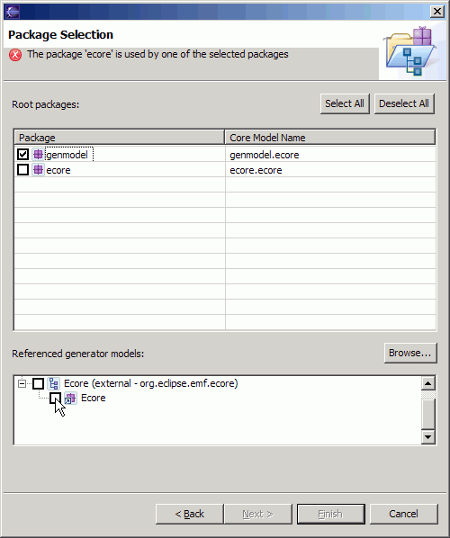

May 19, 2005
Over the past two weeks, a number of potentially disruptive changes to EMF's model importer and code generation tools have been checked into CVS. These changes make their first appearance in this week's integration build.
This document desccribes the changes, and how EMF users might be impacted by them. The following three major changes are discussed:
Many users will be unaffected by these changes. However, you might have some problems moving to this new EMF build, or you may wish to take advantage of the new features these changes provide. You may be affected by one or more of these changes if you...
EMF has long supported importing models from different sources, in particular: Rational Rose class diagrams, XML Schema, annotated Java interfaces, and existing Ecore models. When we talk about "importing a model", we're refering to creating one or more ".ecore" files, each describing a package in the original model, and a single ".genmodel" file, which ties them together and provides additional information used in code generation.
The support for importing models has been provided by a number of wizards, headless applications, and Ant tasks, which gather information from the user, invoke an Ecore builder (RoseEcoreBuilder, JavaEcoreBuilder, or XSDEcoreBuilder) to convert the input model into EPackages, create and initialize a GenModel, and then save these artifacts. The wizard and applications contained a lot of duplicated code, which made it difficult to ensure consistent behaviour and provided no base from which to derive additional model importers.
This work, then, accomplishes two things:
Functionality has been removed from the following three plug-ins:
Equivalent functionality has been added via the following five:
The first of these provides the new EMF wizards, along with a simple framework for writing model importers. The other four provide implementations for the above model sources. Wizards are provided for all four; applications and Ant tasks are, so far, only provided for Rose and XML Schema.
Previously, the wizards and applications computed default values for many attributes of GenModel, and set them, causing code to be repeated in many places. Now, as many of those as possible are computed by the GenModel itself. Only three attributes need to be set explicitly by the model importer:
The following attributes, which used to be set directly, have instead been made unsettable, with derived default values:
When these attributes are unset, their get methods return values that are derived from the above three required attributes.
The defaults are the same as what was set by the wizards and applications before, but now they won't be serialized in the ".genmodel" file. If any of these attributes are blanked out, in order to disable generation of the optional edit, editor or test plug-in, an empty string value will be stored.
The upshot is that, if you have ".genmodel" files that store computed default values of these attributes, you may wish to unset them, so that they are no longer stored. To check this, open the file in the EMF generator, select the root, GenModel element, and click on the value in the Property view, so that it becomes editable. Click the "Restore Default Value" toolbar button to unset the attribute:

If the value does not appear to change, then the attribute was previously set to the default value, and it can be left unset. If it does change, undo the change.
More significantly, if you have already unset any of these attributes, which previously would have disabled generation of the corresponding optional plug-ins, those attributes will begin returning their derived, default values. As a result, generation may be reenabled, and undesired code may be generated when you select "Generate All". To disable generation of one of the plug-ins, blank out the corresponding directory property. This causes the attribute to be set to an empty string value.
There is an additional change to GenModel: a new attribute, importerID, has been added. It identifies the importer used for a model, allowing the correct importer to be suggested when reloading it. It is written out automatically by the importer, and is not surfaced by the generator UI, so you need not worry about it unless you're writing a new model importer.
Although the wizards have been rewritten, their behaviour and appearance are largely unchanged. The one notable change is that a new Empty EMF Project wizard has been supplied. This functionality was previously provided by the regular EMF Project wizard. However, since it doesn't actually involve importing or creating any model, it simply does not fit in the new design.

Other changes are fairly cosmetic. For example, the model importer is now selected from a list, rather than using radio buttons, and the Rose detail page has been improved, with support for browsing the workspace and seperate buttons for populating the path map symbols and loading the model.
The two headless applications for importing models, Rose2GenModel and XSD2GenModel, have been replaced by new ones, RoseImporterApplication and XSDImporterApplication. As mentioned previously, these share code with the wizards, providing more consistent operation and better maintainability. Since the new applications are in new plug-ins, the qualified IDs used to start them have changed, to "org.eclipse.emf.importer.rose.Rose2GenModel" and "org.eclipse.xsd.ecore.importer.XSD2GenModel", respectively (the base IDs have remained the same). If you invoke either of these applications directly, for example in a build, you will have to update the "-application" option in the build script's invocation.
Both applications support two new options: "-refGenModel" can be used to reference other models for which ".genmodel" files have already been created, and "-quiet" can be used to suppress output. Please see the usage instructions (invoke the application with no arguments) for details.
XSDImporterApplication now uses a default for the modelPluginID attribute of GenModel that is consistent with the wizard and with the other importers. The default value is now based on the project name determined from the modelDirectory. The previous inconsistency, in which it was based on the qualified name of the first package, could only be conisdered a bug. If, however, that value is desired, the "-modelPluginID" option can be used to explicitly set it. Finally, foreignModel attribute values, URIs identifying the original schemas, can now be relative. Again, this is for consistency with the wizard. It should make no difference to the model.
The two Ant Tasks for importing and generating models, RoseGeneratorTask and XSDGeneratorTask, are almost unchanged. Although they have been moved into the new plug-ins, Ant Tasks are invoked using a simple, unqualified name. These names, "emf.Rose2Java" and "emf.XSD2Java", are unchanged.
The tasks have been modified to use the new importer applications, so the same changes in the default values of modelPluginID and foreignModel, as described in the previous section, apply.
EMF has traditionally used platform resource URIs to reference other models in the workspace. For example, "platform:/resource/org.eclipse.emf.ecore/src/model/Ecore.ecore" would refer to Ecore, but you'd need to import the plug-in, complete with source, into your workspace for this to work.
Now, EMF also supports platform plugin URIs for referencing models in binary, external plug-ins. Without installing any source or importing any plug-ins, you can use "platform:/plugin/org.eclipse.emf.ecore/model/Ecore.ecore" to refer to Ecore, for example.
As the above URI suggests, the "model" directories, containing all of the ".ecore" and ".generator" files in EMF, were moved out from "src" into the plug-in root directories, so that they could easily be included in the binary plug-ins. So, if you currently have any models with references to Ecore, GenModel, or other models in EMF, you'll need to edit them as text and and manually update those references. For example, any reference to "platform:/resource/org.eclipse.emf.ecore/src/model/Ecore.ecore" must be changed to "platform:/resource/org.eclipse.emf.ecore/model/Ecore.ecore" (or "platform:/plugin/org.eclipse.emf.ecore/model/Ecore.ecore", to refer the external plug-in).
This opportunity was also taken to make each EMF plug-in more standard by moving its JAR files from "runtime" up into its root. This change should not have any impact in Eclipse use, but the class path used in stand-alone invocations, including those in scripts, will probably need updating.
These same locations will now also be used in new EMF projects. That is, the ".ecore" and ".generator" files will be placed in "model", instead of "src/model", and the generated "plugin.xml" file will declare the JAR file in the plug-in's root directory. In addition, the project output directory will be "bin", instead of "runtime".
The "plugin.xml" will not change unless you delete and regenerate it, and the project output directory will not change unless the "Update Classpath" property has been enabled in the generator model. In either case, you may need to recreate your Ant build file or update whatever scripts you use for building.
When an EPackage is registered using the "org.eclipse.emf.ecore.generated_package" extension point, an absolute or plug-in-relative URI for the corresponding ".genmodel" file can now be specified, making the model visible to the model importer and code generation tools.
All of the models in EMF use this mechanism. As a result, if you try to import a model that references, for example, Ecore, you'll see that Ecore is already available, from an external plug-in, even before you browse the workspace:

Please note that extending any classes from Ecore is still strongly discouraged. This mechanism may certainly be used to reference Ecore types, however.
This kind of registration will also be generated into the "plugin.xml" for new models, but this file is never overwritten when a model is regenerated. So, if you wish to make existing models available in this way, you'll need to update it manually or delete it before regenerating.
A number of utilities used in code generation that are not dependent on Ecore or GenModel have been moved from the org.eclipse.emf.codegen.ecore plug-in to a util package in org.eclipse.emf.codegen. The following two classes have been created:
Although these plug-ins are not officially API, some clients of EMF are using them and will need to be updated accordingly.